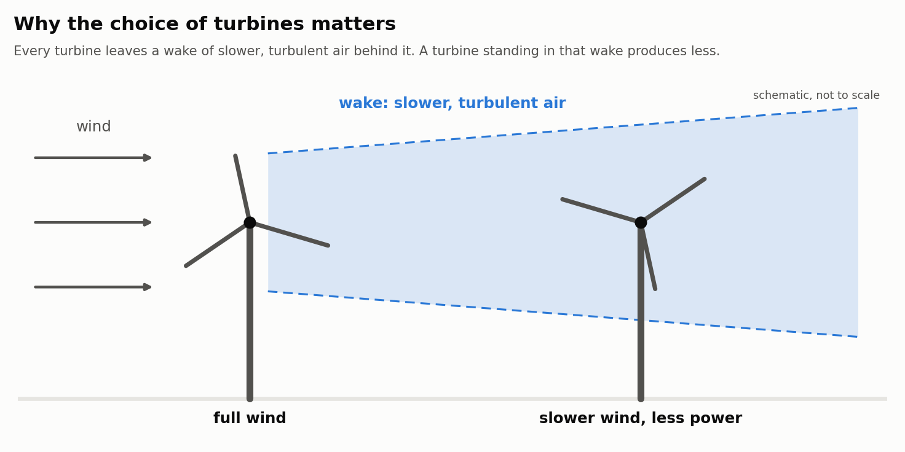
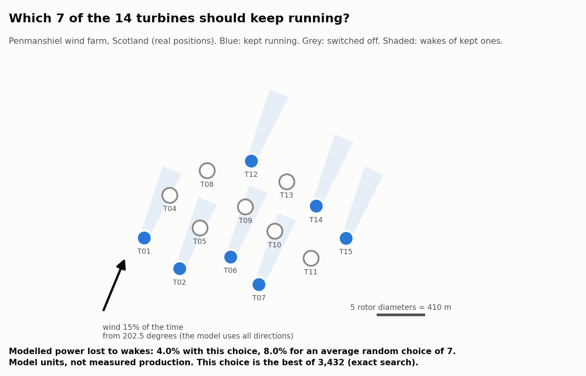
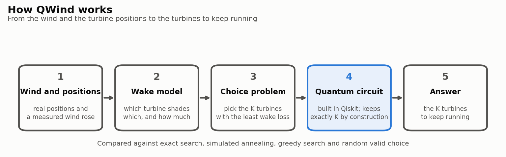
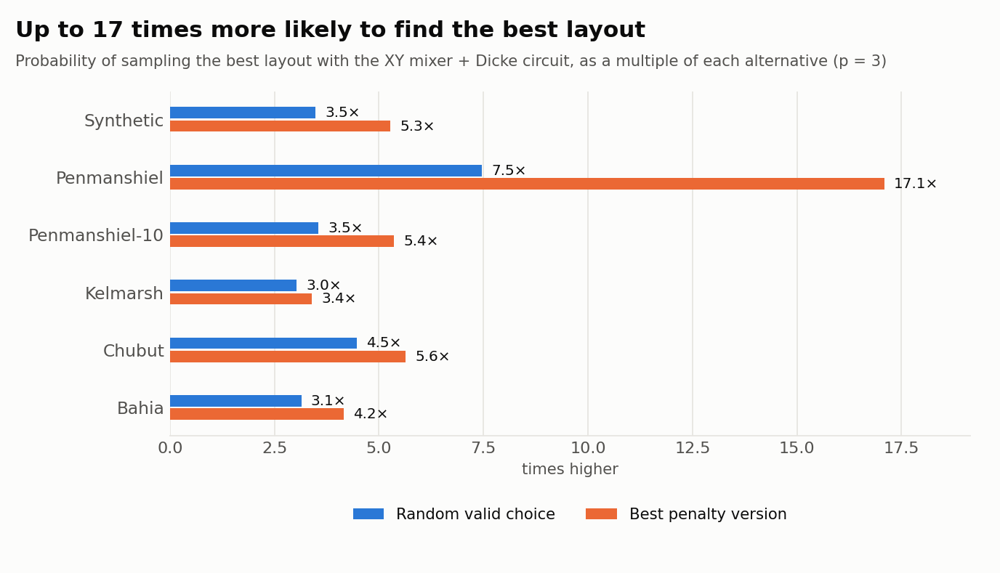
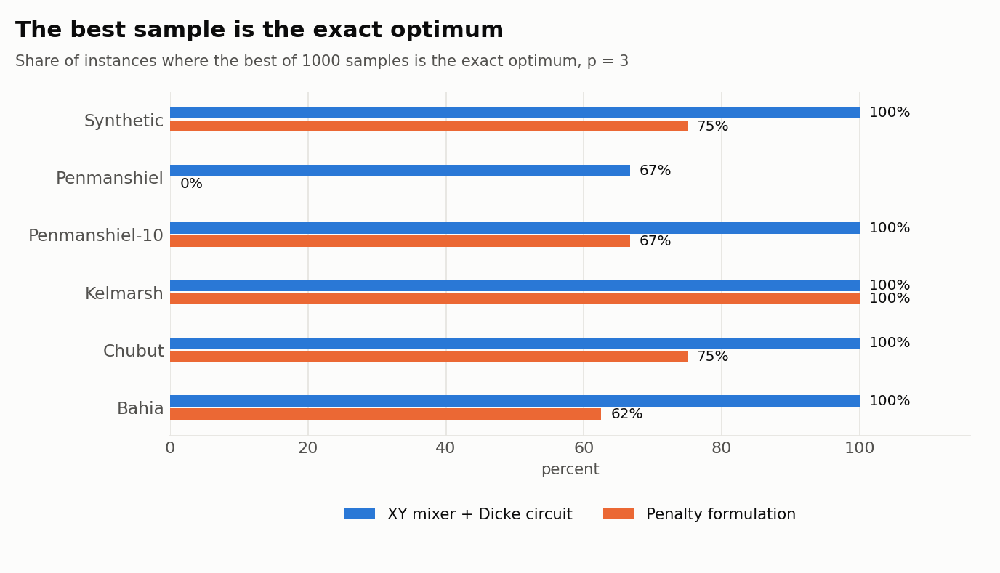
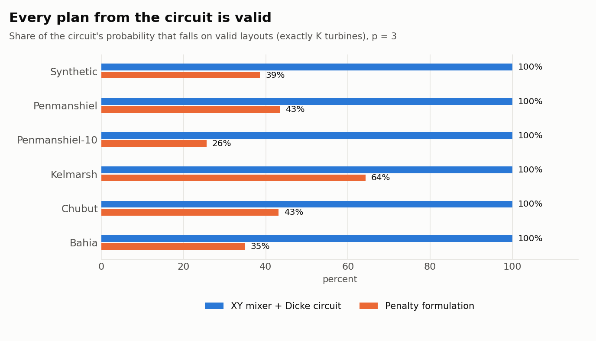
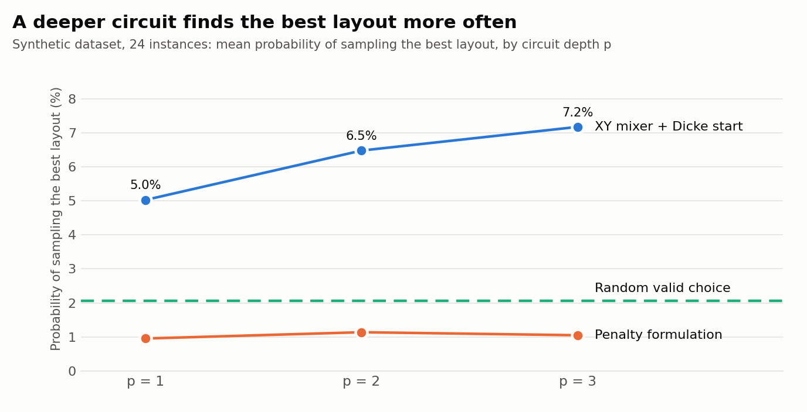

Mathematical model
QUBO
Turbine selection written as a QUBO that captures wake interactions between turbines.
Algorithm
QAOA
QAOA built by hand in Qiskit, simulated, with the "keep exactly K turbines" rule inside the circuit.
Valid plans
100%
Every output of the XY mixer + Dicke circuit keeps exactly K turbines.
The problem in pictures



Results at a glance




Figures are generated from results/ by experiments/make_figures.py. Model limits: pairwise additive Jensen wake losses, small instances (at most 14 cells), CPU simulation plus one small run on real hardware. No quantum advantage is claimed.
Results by dataset
| Method | Variant | p | P(optimal) | P(valid) | Energy gap | Time (s) |
|---|
Means over the instances of each dataset, read from data/summary.json (copy of results/summary.json). P(optimal) is the probability of sampling the best layout, P(valid) the share of probability on valid layouts, energy gap the distance to the exact optimum (0 is optimal).
Core Team
Frontend & UI/UX
Baltazar Salerno
Interface design, user experience and visual architecture of the project.
Systems & Quantum Core
Agustin Diaz-Cano
Backend development, mathematical modelling and optimization logic.